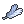

POKÉMON ORO
Lugar: Islas Remolino (Whirl Islands, en Ingles)


Es necesario un objeto llamado Ala Plateada , que en este juego se recibe despues de pasarte la Liga Pokémon y llegar a Ciudad Plateada donde te la entrega un anciano.
POKÉMON PLATA
Lugar: Islas Remolino (Whirl Islands, en Ingles)


Es necesario un objeto llamado Ala Plateada , que en este juego se recibe en Ciudad Trigal cuando salvas al director de la radio de las manos del Team Rocket.
POKÉMON CRISTAL
Lugar: Islas Remolino (Whirl Islands, en Ingles)


Es necesario un objeto llamado Ala Plateada , que en este juego se recibe despues de pasarte la Liga Pokémon y llegar a Ciudad Plateada donde te la entrega un anciano.